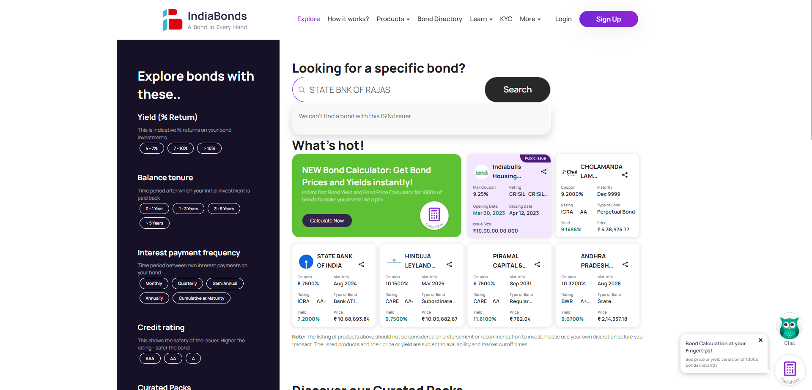

-
Indiabonds Website
3:41:11 PM / 00:00:44:974 Fail
Indiabonds Website
03.21.2023 3:41:11 PM 03.21.2023 3:41:56 PM 00:00:44:974 · #test-id=1FailVerify the Bond Directory ISIN SearchPassVerify the Bond Directory ISIN SearchGiven User lands to indiabonds websiteWhen he close the popupsThen open explore link on other tabAnd verify the title of Explore pageAnd user search for isin INE128S07333 in bond searchFailVerify the Bond Directory ISIN SearchGiven User lands to indiabonds websiteWhen he close the popupsStepDefination.Hooks.AddScreenshot(io.cucumber.java.Scenario)Then open explore link on other tabStep skippedAnd verify the title of Explore pageStep skippedAnd user search for isin INE123456789 in bond searchStep skippedPassVerify the Bond Directory ISIN SearchGiven User lands to indiabonds websiteWhen he close the popupsThen open explore link on other tabAnd verify the title of Explore pageAnd user search for isin INE121A08ON5 in bond searchFailVerify the Bond Directory SearchFailVerify the Bond Directory SearchGiven User lands to indiabonds websiteWhen he close the popupsStepDefination.Hooks.AddScreenshot(io.cucumber.java.Scenario)Then open explore link on other tabStep skippedAnd verify the title of Explore pageStep skippedAnd user search for issuer STATE BANK OF PATIALA in bond searchStep skippedFailVerify the Bond Directory SearchGiven User lands to indiabonds websiteWhen he close the popupsThen open explore link on other tabAnd verify the title of Explore pageAnd user search for issuer STATE BNK OF RAJAS in bond searchStepDefination.Hooks.AddScreenshot(io.cucumber.java.Scenario)imageFailVerify the Bond Directory SearchGiven User lands to indiabonds websiteWhen he close the popupsStepDefination.Hooks.AddScreenshot(io.cucumber.java.Scenario)Then open explore link on other tabStep skippedAnd verify the title of Explore pageStep skippedAnd user search for issuer STATE BANK OF INDIA in bond searchStep skipped
-
java.lang.AssertionError
1 tests
java.lang.AssertionError
1 failedStatus Timestamp TestName Fail 15:41:39 PM And user search for issuer STATE BNK OF RAJAS in bond search Indiabonds Website.Verify the Bond Directory Search.And user search for issuer STATE BNK OF RAJAS in bond search -
org.openqa.selenium.NoSuchWindowException
6 tests
org.openqa.selenium.NoSuchWindowException
6 failedStatus Timestamp TestName Fail 15:41:20 PM When he close the popups Indiabonds Website.Verify the Bond Directory Search.When he close the popupsFail 15:41:26 PM StepDefination.Hooks.AddScreenshot(io.cucumber.java.Scenario) Indiabonds Website.Verify the Bond Directory Search.StepDefination.Hooks.AddScreenshot(io.cucumber.java.Scenario)Fail 15:41:20 PM When he close the popups Indiabonds Website.Verify the Bond Directory Search.When he close the popupsFail 15:41:26 PM StepDefination.Hooks.AddScreenshot(io.cucumber.java.Scenario) Indiabonds Website.Verify the Bond Directory Search.StepDefination.Hooks.AddScreenshot(io.cucumber.java.Scenario)Fail 15:41:22 PM When he close the popups Indiabonds Website.Verify the Bond Directory ISIN Search.When he close the popupsFail 15:41:27 PM StepDefination.Hooks.AddScreenshot(io.cucumber.java.Scenario) Indiabonds Website.Verify the Bond Directory ISIN Search.StepDefination.Hooks.AddScreenshot(io.cucumber.java.Scenario)
-
@VerifyIssuer
3 tests
@VerifyIssuer
3 failedStatus Timestamp TestName Fail 15:41:11 PM Verify the Bond Directory Search Indiabonds Website.Verify the Bond Directory SearchFail 15:41:11 PM Verify the Bond Directory Search Indiabonds Website.Verify the Bond Directory SearchFail 15:41:11 PM Verify the Bond Directory Search Indiabonds Website.Verify the Bond Directory Search -
@VerifyISIN
3 tests
@VerifyISIN
2 passed 1 failedStatus Timestamp TestName Pass 15:41:11 PM Verify the Bond Directory ISIN Search Indiabonds Website.Verify the Bond Directory ISIN SearchFail 15:41:11 PM Verify the Bond Directory ISIN Search Indiabonds Website.Verify the Bond Directory ISIN SearchPass 15:41:11 PM Verify the Bond Directory ISIN Search Indiabonds Website.Verify the Bond Directory ISIN Search
Started
Mar 21, 2023 03:41:10 PM
Ended
Mar 21, 2023 03:41:56 PM
Features Passed
0
Features Failed
1
Features
Scenarios
Steps
Timeline
Tags
| Name | Passed | Failed | Skipped | Others | Passed % |
|---|---|---|---|---|---|
| @VerifyIssuer | 0 | 3 | 0 | 0 | 0% |
| @VerifyISIN | 2 | 1 | 0 | 0 | 66.667% |